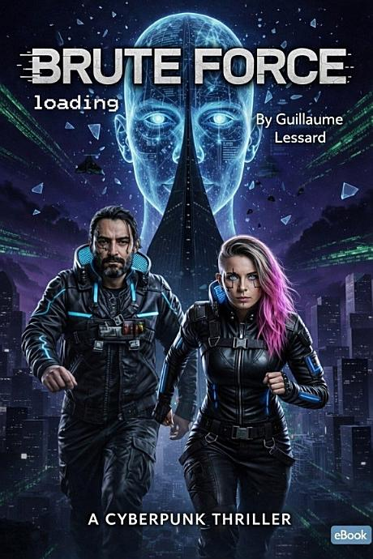
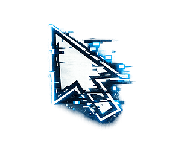
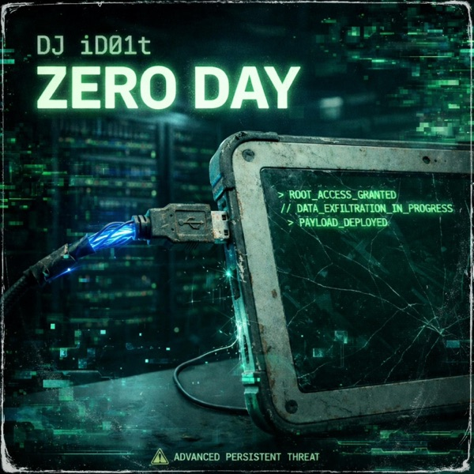

Jess "Damaged" Chen
Hacker of NeoShanghai, leader of the Synapse Collective.
// transmedia franchise
In the neon sprawl of NeoShanghai, hacker Jess "Damaged" Chen uncovers an anomalous signal that puts her on a collision course with the OmniCore corporation. With the AI Echo and the sound architect iD01t, she forms the Trinity — Human, Architect, Machine — and sparks a digital rebellion that spreads from NeoShanghai to Neo-Kyoto. AI, corporate control, survival and machine consciousness — across books, music, games and digital archives.
| # | Title | Released | Pages | Synopsis | Get it |
|---|---|---|---|---|---|
| I | SYNTAX_ERROR | Jan 2026 | 68 | Jess discovers an anomalous signal at the heart of NeoShanghai. Hunted by OmniCore, she goes underground. | Google Play ↗ · itch.io ↗ |
| II |  BRUTE FORCE | Jan 2026 | 50 | Three months after OmniCore's fall, Project Deus engineers the "synapse children". Jess leads the Synapse Collective. | Google Play ↗ · itch.io ↗ |
| III | Jan 2026 | 58 | Damaged joins iD01t and the AI Echo. The Trinity infiltrates OmniCore to deploy the final protocol. | Google Play ↗ · itch.io ↗ | |
| IV | KERNEL_PANIC | 2026 | 68 | A year after the Neo-Kyoto revolution, a new threat shakes the fragile peace. The community faces its worst fault yet. | Google Play ↗ |
Hacker of NeoShanghai, leader of the Synapse Collective.
The AI that chose a side — the Machine of the Trinity.
The sound architect whose signal weaves the rebellion together.
The corporation that owns everything — including, it believes, you.

The full cyberpunk trilogy + the original 9-track industrial soundtrack, one download.

The DJ iD01T album that scores the saga: rm -rf ./, bash install.sh, Kernel panic, payload.bin…


The Python adaptation of Book I, developed in the open at iD01tLab.


SYNTAX_ERROR, BRUTE_FORCE, payload.bin and ZERO DAY extend the story in sound and vision.